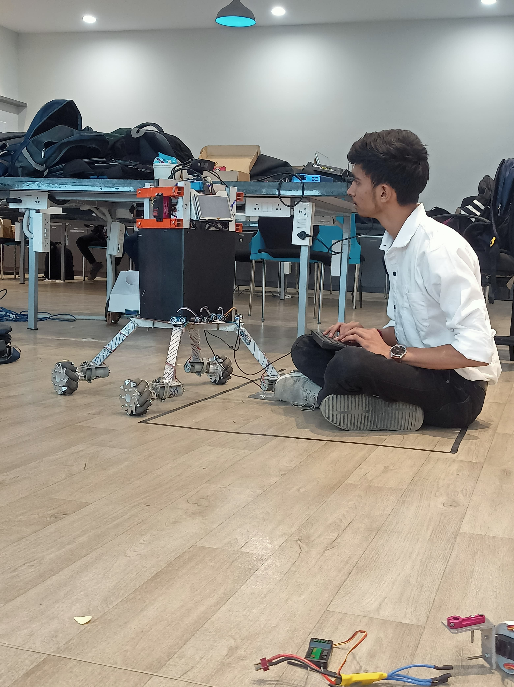
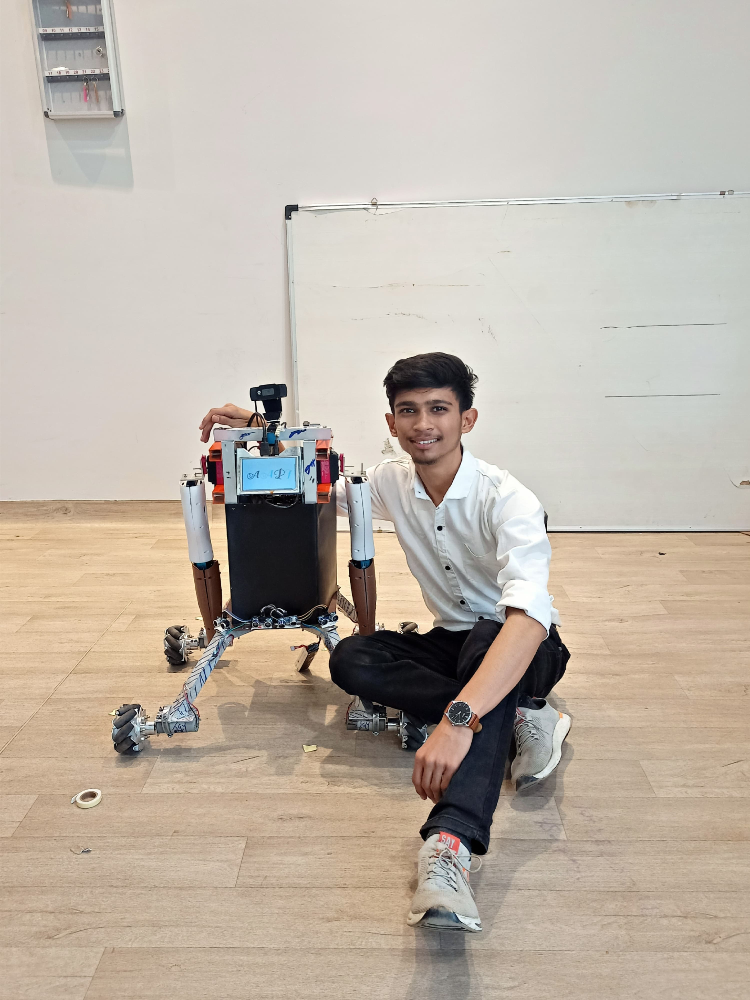
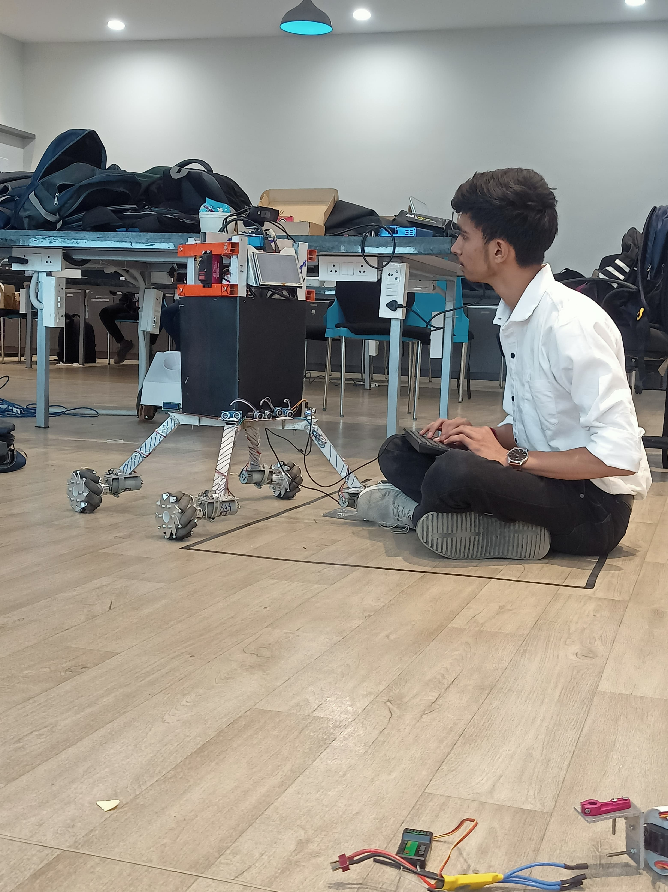
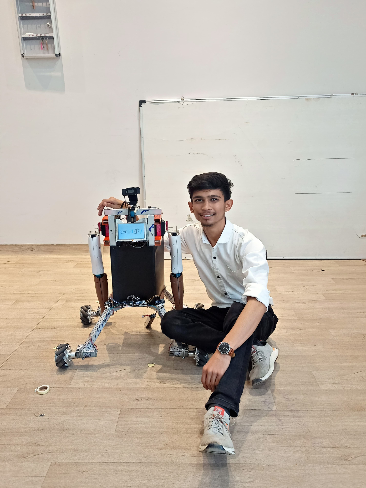
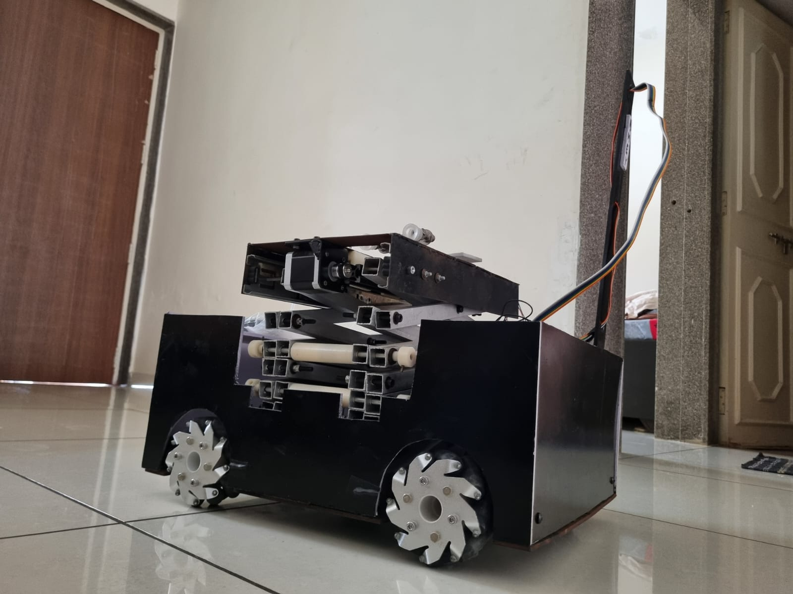
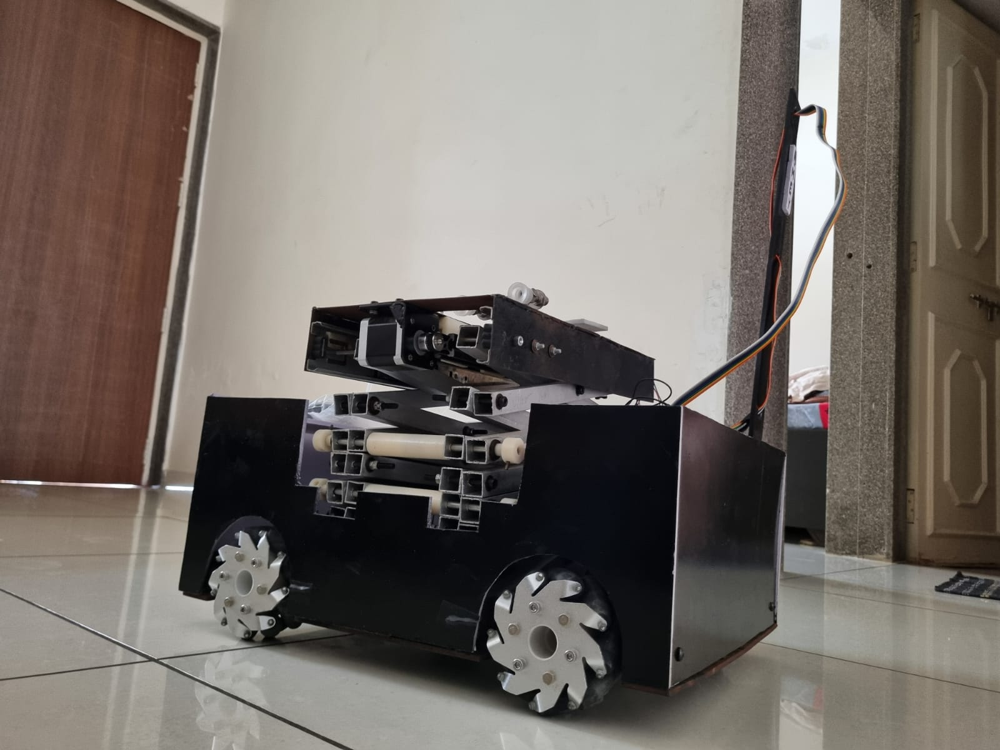

AAPI
APPI is a humanoid robot concept with capabilities like image processing, obstacle avoidance, and GPS navigation. I contributed as a CAD designer and hardware developer for this project, designed for the Smart India Hackathon.
 


AMEY
AMEY is a warehouse management robot equipped for picking and placing items in warehouses and dark stores. It features obstacle avoidance, image processing, and GPS tracking. I led the design for this project, funded by iCreate.